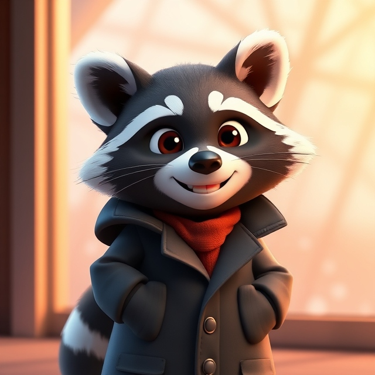
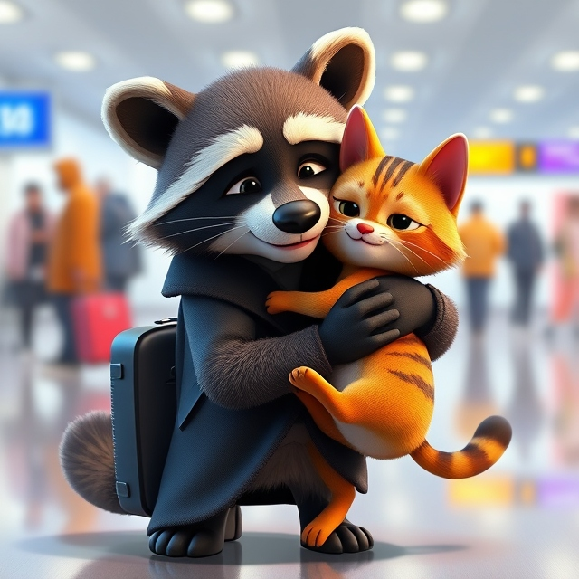
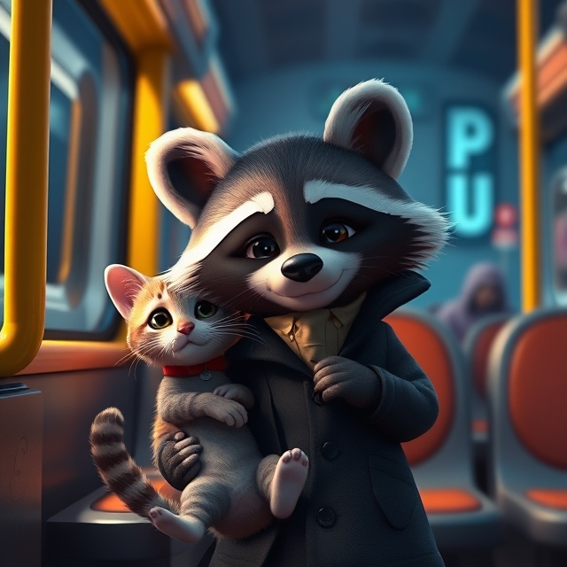
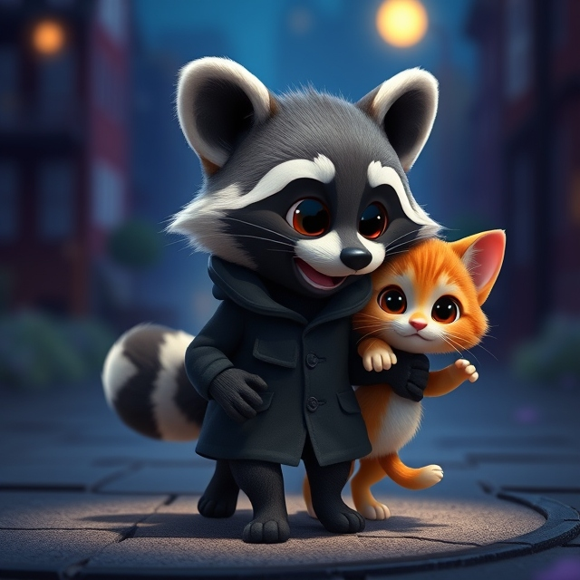
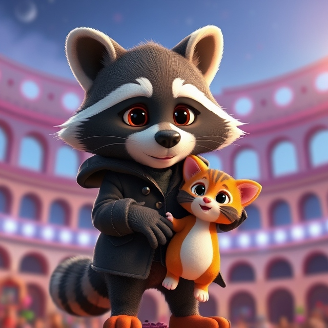
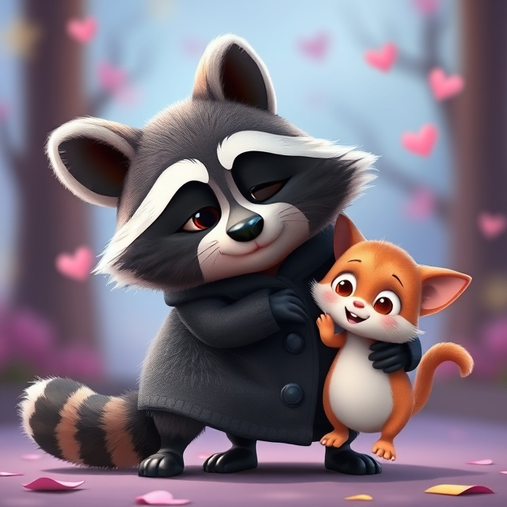

ЧУДОВА ЗУСТРІЧ
Зустрілися ми там, де наші мрії починаються. Попри місяці очікувань, я продовжував жити у своїй рутині, але думки про неї завжди залишалися поруч. Одного дня я отримав листа. Вона писала: "Я скоро повернуся, зустрінемося на нашому місці". Я знав, що вона мала на увазі аеропорт — наш пункт початку нової історії.
Я сидів в очікуванні в залі прильотів. Серце калатало так, ніби намагалося вирватися назустріч їй. Люди проходили повз, літак за літаком прибував, але її все не було. Її літак запізнювався, а моє серце билося ще сильніше. І тут, крізь скляні двері, я побачив її. Вона була такою ж прекрасною, як у той день, коли ми прощалися. Її посмішка засвітилася, як сонце, коли наші очі зустрілися.
Ми обійнялися так міцно, ніби час і відстань ніколи не розділяли нас. Усі навколо здавалися лише тінями, бо для мене існувала тільки вона. Це був момент, який залишиться в моєму серці назавжди.
НЕЙМОВІРНА ПОДОРОЖ
Ми вирушили додому разом. У цей момент було щось дивне і водночас чарівне. Вона була поруч, але я відчував, ніби це сон. Чи це справді вона? Чи правильно я поводжусь? Сотні думок крутилися в моїй голові, і я намагався знайти правильні слова. Але слова були зайвими — її присутність казала все сама за себе. Вона посміхнулася, і я зрозумів, що це саме той момент, на який я чекав.
Ми йшли повільно, насолоджуючись кожною хвилиною цієї подорожі. Коли ми дісталися дому, ми не поспішали заходити. Замість цього зупинилися перед дверима і поглянули на зоряне небо. Воно було безкрайнім, ніби створене спеціально для нас. У цей момент ми були не просто парою звірів, а мандрівниками у власному всесвіті.
Внизу виблискував Колізей, що нагадував древню казку. Ми уявляли, що це наш власний Колізей, а довкола — прекрасні сади. Ми вигадували історії про те, як дбайливо доглядаємо кожну рослину і як організовуємо свята для друзів та рідних. Ці фантазії були простими, але такими приємними. Вони наповнювали наші серця теплом і мріями про спільне майбутнє.
Ми сміялися, вигадували все більше й більше деталей, поки не помітили, що ніч уже загорнула нас у свою тишу. Це був момент, який назавжди залишиться в нашій пам’яті: проста ніч, зорі над головою, мрії про Колізей та сади — і ми двоє, поруч, у гармонії з усім світом.
З НОВИМ РОКОМ
"Моя люба, Цей рік був для нас випробуванням, але я вірю, що все буде добре. Незважаючи на відстань, ти завжди поруч у моєму серці. Ми обов’язково знову зустрінемося, і наші мрії стануть реальністю. З Новим роком, моя маленька! Нехай цей рік принесе нам силу, терпіння і багато можливостей для щастя.